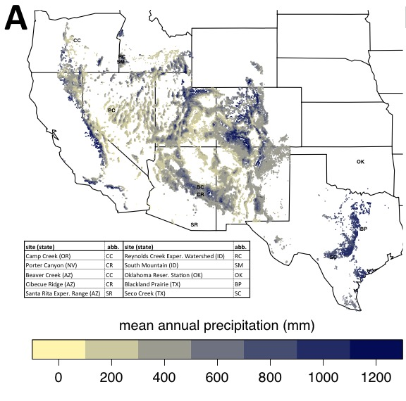

Streamflow Paradox
Most of the water resources in the western U.S. rely on winter snowpack. Water Resources in these regions are at particular risk with climate change due to less snow and more rain (Barnett et al. 2005; Berghuijs et al. 2014). In the Columbia River Basin, for example, 70-75% of streamflow comes from snow melt (Serreze et al. 1999). Furthermore, in the semi-arid West - states like Idaho, Oregon, and Nevada with the majority of the populations residing in large cities – the populations in the urban centers are rapidly growing and the majority of the area in the state has low population density (Lang et al. 2008). As populations throughout the western U.S. grow and human demand for water increases, more options are explored to increase water yield. Often schemes are devised to increase water delivery to these population centers by removing vegetation in the uplands.
One option that is often presented to increase water yield in semi-arid landscapes is the removal of pinyon and juniper trees. For much of the last century the justification pinyon and juniper removal has not been water yield, but forage improvement (Dalen and Snyder 1987; Belsky 1996), since grasses and forbs increase drastically with pinyon and juniper removal. However, justification for pinyon and juniper removal has shifted in the last several decades from forage improvement to augmentation of groundwater recharge, increased base flow, and increased overall streamflow (BLM 1993, 1994). Indeed, there is extensive literature supporting that tree removal in forests increases water yield (Bosch and Hewlett 1982; Stednick 1996; Zhang et al. 2001, Huang et al. 2006; Zégre et al. 2010; Zou et al. 2014; Qiao et al. 2015). Indeed there is anecdotal evidence from ranchers and land managers that springs dried up when pinyon and juniper trees encroached into an area (Cockle 2013) or where pinyon and juniper removal augmented streamflow (Kuhn et al. 2007). Due to both reduction in forage and perceived reduction in water yield, ranchers and land managers alike across the semi-arid west view pinyon and juniper as a “weed” and call for its removal (Elbert 1994; Swan 1994).
Despite that many toute that pinyon and juniper removal will augment water yield, these assertions are often based on studies in humid forests or anecdotal evidence. Many studies in pinyon and juniper watersheds reveal negligible increase in streamflow (Clary et al. 1974; Baker Jr 1984; Dugas et al. 1998; Baker Jr and Ffolliott 2000; Owens and Moore 2007). In other cases woody plant expansion increased streamflow (Wilcox and Huang 2010) and in another case woody plant die-off decreased streamflow (Guardiola-Claramonte et al. 2011). As a result of this scientific literature, many scientists question whether pinyon and juniper removal actually results in appreciable gain in most landscapes is highly contested (Huxman et al. 2005; Wilcox et al. 2006; Roundy and Vernon 1999; Ffolliott and Gottfried 2012). Looking at the map of precipitation below (map A) this conclusion makes sense, since precipitation is important to predict streamflow. And there doesn't seem to be a difference in precipitation between areas in the southwest where previous pinyon and juniper removal studies occured, and areas in the norhtern Great Basin where anecdotal evidence of streamflow increases after PJ removal.

Whether woody plant removal actually increases water yield depends on the physical traints of the plants (rooting depth, canoy size, etc.), climate (precipitation amount, seasonality, and intensities), soil type, and geomorphology (Thurow and Hester 1997; Huxman et al. 2005; Wilcox et al. 2006). Many researchers assert that based on previous water yield studies, only sites with more than 450 mm (18 inches) of precipitation will result in increased water yield if pinyon and juniper are removed (Hibbert 1983; Wilcox 2002; Kuhn et al. 2007). Studies that call into question whether pinyon and juniper removal reduces streamflow cite empirical studies in the southwest and southern Great Basin (Belsky 1996; Roundy and Vernon 1999; Ffolliott and Gottfried 2012), where a large portion of the precipitation occurs during summer monsoons. We can see in the figure (map B) below that in the southwest U.S. where these studies occur the monsoon index - the porportion of the precipitation that occurs in the summer - is high. This means much of the precipitation that occurs during the summer will be lost to evaporation or transpiraiotn. Conversly, many pinyon and juniper reside in the norther Great Basin where precipitation predominantly occurs in the winter when evaporative demand is low. Two empirical studies are underway in the northern pinyon and juniper cover range (labeled in the maps below), the South Mountain paired-catchment study in southwestern Idaho by the USDA-ARS in Boise, Idaho and the Porter Canyon Experimental Forest administered by the USDA-ARS in Reno, Nevada in winter-dominated precipitation regimes. These studies could clarify if and where increases in streamflow would occur with PJ removal.
On a final point about pinyon and juniper removal, while many ranchers and land managers consider these trees a “weed” and push for the removal, there are many stakeholders in the semi-arid west who hold these trees in high regard and view tree removal plans with skepticism. The Shoshone-Bannock people of southern Idaho view juniper trees as sacred (C. Davis, personal communication). Ranchers have seen pinyon and juniper removal in south eastern Oregon that included cutting down old growth (>150 years) pinyon and juniper trees (Cockle 2013). While some people call for the removal of juniper to improve forage and water yield, others hold pinyon and juniper with high esteem and regard these schemes with skepticism.
Citations
Baker Jr, M. B. 1984. Changes in streamflow in an herbicide-treated pinyon-juniper watershed in Arizona. Water Resources Research 20:1639–1642.
Baker Jr, M. B., and P. F. Ffolliott. 2000. Contributions of watershed management research to ecosystem-based management in the Colorado River Basin. Land stewardship in the 21st century: The contributions of watershed management. Proceedings RMRS-P-13, USDA Forest Service:117–128.
Barnett, T. P., J. C. Adam, and D. P. Lettenmaier. 2005. Potential impacts of a warming climate on water availability in snow-dominated regions. Nature 438:303–309.
Belsky, A. J. 1996. Viewpoint: Western Juniper Expansion: Is It a Threat to Arid Northwestern Ecosystems? Journal of Range Management 49:53.
Berghuijs, W. R., R. A. Woods, and M. Hrachowitz. 2014. A precipitation shift from snow towards rain leads to a decrease in streamflow. Nature Climate Change 4:1–4.
BLM. 1993. Warner Lakes Proposed Plan Amendment for Juniper management on selected areas of the Lakeview Resource Area, Oregon. Bureau of Land Management.
BLM. 1994. Burns District Planning Update.
Bosch, J. M., and J. D. Hewlett. 1982. A review of catchment experiments to determine the effect of vegetation changes on water yield and evapotranspiration. Journal of hydrology 55:3–23.
Clary, W. P., M. B. Baker, P. F. O’Conell, T. N. Johnsen, and R. E. Cambell. 1974. Effects of pinyon-juniper removal on natural resource products and uses in Arizona. USDA–Forest Service Research Paper RM- 128, Rocky Mountain Forest and Range Experiment Station., Ft Collins, CO.
Cockle, R. 2013. Juniper invasion marring Oregon’s high desert habitat. The Oregonian.
Dalen, R. S., and W. R. Snyder. 1987. Economic and social aspects of pinyon-juniper treatment–then and now. GEN. TECH. REP., INTERMT. RES. STN.:343–350.
Dugas, W. A., R. A. Hicks, and P. Wright. 1998. Effect of removal of Juniperus ashei on evapotranspiration and runoff in the Seco Creek watershed. Water Resources Research 34:1499–1506.
Elbert, J. 1994. Too much of a good thing. Herald and News. Klamath Falls, OR.
Ffolliott, P. F., and G. J. Gottfried. 2012. Hydrologic processes in the pinyon-juniper woodlands: A literature review. Page 20. General Technical Report, U.S. Department of Agriculture, Forest Service, Rocky Mountain Research Station.
Guardiola-Claramonte, M., P. A. Troch, D. D. Breshears, T. E. Huxman, M. B. Switanek, M. Durcik, and N. S. Cobb. 2011. Decreased streamflow in semi-arid basins following drought-induced tree die-off: A counter-intuitive and indirect climate impact on hydrology. Journal of Hydrology 406:225–233.
Hibbert, A. R. 1983. Water yield improvement potential by vegetation management on western rangelands. Water Resources Bulletin 19:375–382.
Huang, Y., B. P. Wilcox, L. Stern, and H. Perotto-Baldivieso. 2006. Springs on rangelands: runoff dynamics and influence of woody plant cover. Hydrological Processes 20:3277–3288.
Huxman, T. E., B. P. Wilcox, D. D. Breshears, R. L. Scott, K. A. Snyder, E. E. Small, K. Hultine, W. T. Pockman, and R. B. Jackson. 2005. Ecohydrological implications of woody plant encroachment. Ecology 86:308–319.
Kuhn, T., D. Cao, and M. George. 2007. Juniper removal may not increase overall Klamath River Basin water yields. California Agriculture 61:166–171.
Lang, R., A. Sarzynski, and M. Muro. 2008. Mountain Megas: America’s Newest Metropolitan Places and a Federal Partnership to Help Them Prosper. Brookings Institution.
Owens, M. K., and G. W. Moore. 2007. Saltcedar Water Use: Realistic and Unrealistic Expectations. Rangeland Ecology & Management 60:553–557.
Qiao, L., C. B. Zou, R. E. Will, and E. Stebler. 2015. Calibration of SWAT model for woody plant encroachment using paired experimental watershed data. Journal of Hydrology 523:231–239.
Roundy, B. A., and J. L. Vernon. 1999. Watershed values and conditions associated with pinyon-juniper communities. USDA Forest Service, Rocky Mountain Research Station, Ogden, Utah, USA 9:172–187.
Serreze, M. C., M. P. Clark, R. L. Armstrong, D. A. McGinnis, and R. S. Pulwarty. 1999. Characteristics of the western United States snowpack from snowpack telemetry (SNOTEL) data. Water Resources Research 35:2145–2160.
Stednick, J. D. 1996. Monitoring the effects of timber harvest on annual water yield. Journal of Hydrology 176:79–95.
Swan, L. 1994. Western Juniper management and commercialization: an emerging issue for eastside EIS. Winema National Forest, Klamath Falls Ore.
Thurow, T. L., and J. W. Hester. 1997. How an increase or reduction in juniper cover alters rangeland hydrology. Pages 9–22 Juniper Symposium Proceedings. Texas A&M University, San Angelo, Texas, USA.
Wilcox, B. P. 2002. Shrub control and streamflow on rangelands: A process based viewpoint. Journal of Range Management 55:318–326.
Wilcox, B. P., and Y. Huang. 2010. Woody plant encroachment paradox: Rivers rebound as degraded grasslands convert to woodlands. Geophysical Research Letters 37:L07402.
Wilcox, B. P., M. K. Owens, W. A. Dugas, D. N. Ueckert, and C. R. Hart. 2006. Shrubs, streamflow, and the paradox of scale. Hydrological Processes 20:3245–3259.
Zégre, N., A. E. Skaugset, N. A. Som, J. J. McDonnell, and L. M. Ganio. 2010. In lieu of the paired catchment approach: Hydrologic model change detection at the catchment scale. Water Resources Research 46:n/a–n/a.
Zhang, L., W. R. Dawes, and G. R. Walker. 2001. Response of mean annual evapotranspiration to vegetation changes at catchment scale. Water resources research 37:701–708.
Zou, C. B., D. J. Turton, R. E. Will, D. M. Engle, and S. D. Fuhlendorf. 2014. Alteration of hydrological processes and streamflow with juniper (Juniperus virginiana) encroachment in a mesic grassland catchment. Hydrological Processes 28:6173–6182.